Chapter 7 Generalized Linear Models
In this chapter, we discuss a family of models called generalized linear models. These models include ordinary least squares regression and many others. All[^3] of the models presented in this chapter can be realized as examples of this common framework. We won’t dwell on the common framework in this book, but focus on two specific examples - logistic regression and Poisson regression. We will also be in the classical framework of regression, where we are interested in the theory and assessing the fit of the model, rather than focusing on predictive modeling. We will do a lot of estimates of regression coefficients for various models in this chapter. I hope that by the time you get to the end of reading it, you will be able to set these up in your sleep.
Since generalized linear models include OLS, let’s take a brief review of OLS. Recall that our model is
\[ y_i = \beta_0 + \sum_{j = 1}^p \beta_j x_{ij} + \epsilon_i \]
where \(\epsilon\) is normal with mean 0 and unknown variance \(\sigma^2\). Another way of thinking about this is that we are modeling the expected value of the response via a linear (affine) equation.
\[ E[y_i] = \beta_0 + \sum_{j = 1}^p \beta_j x_{ij} \]
and we are assuming that we have normal errors or deviations from the expected value. Yet another way to think about it is that the response \(y_i\) is normal with mean \(\mu = \beta_0 + \sum_{i = j}^p \beta_j x_{ij}\) and variance \(\sigma^2\).
7.1 Logistic Regression
We begin with an example.
7.1.1 Malaria Example (Intro)
Consider the malaria data set in the fosdata package. Mice were bit 10 times by mosquitoes, and the number of salivary gland sporozoites detected in the mosquitoes was measured. The mice were then observed to determine whether they got malaria. Some of the mice were given a malarial antibody pre-mosquito bite. Our goals are to determine whether the number of sporozoites affects the probability of infection, and whether the antibody affects the probability of infection.
## Warning: package 'ggplot2' was built under R version 4.5.2## Warning: package 'dplyr' was built under R version 4.5.2## ── Attaching core tidyverse packages ──────────────────────── tidyverse 2.0.0 ──
## ✔ dplyr 1.2.0 ✔ readr 2.1.5
## ✔ forcats 1.0.0 ✔ stringr 1.5.2
## ✔ ggplot2 4.0.2 ✔ tibble 3.3.0
## ✔ lubridate 1.9.4 ✔ tidyr 1.3.1
## ✔ purrr 1.1.0
## ── Conflicts ────────────────────────────────────────── tidyverse_conflicts() ──
## ✖ dplyr::filter() masks stats::filter()
## ✖ dplyr::lag() masks stats::lag()
## ℹ Use the conflicted package (<http://conflicted.r-lib.org/>) to force all conflicts to become errorsmm <- fosdata::malaria |>
as_tibble()
ggplot(mm, aes(x = factor(malaria), y = sporozoite)) +
geom_boxplot() +
geom_jitter(width = .1, height = .1) 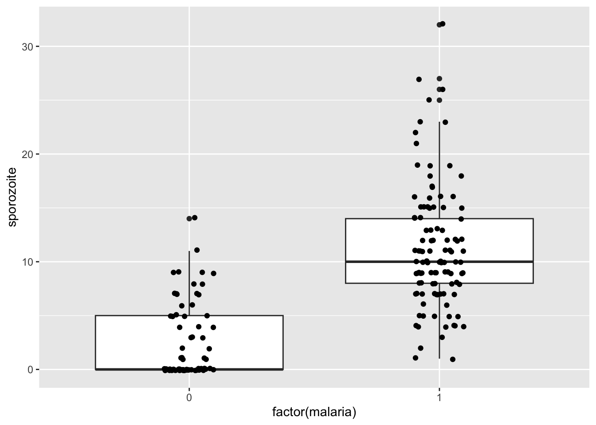
One question we should have is whether mosquitos with 0 sporozoites should be included in the study at all, because they can’t possibly infect the mice. If we remove those mosquitos, we get the following graph.
mm <- filter(mm, sporozoite > 0)
ggplot(mm, aes(x = factor(malaria), y = sporozoite)) +
geom_boxplot() +
geom_jitter(width = .1, height = .1)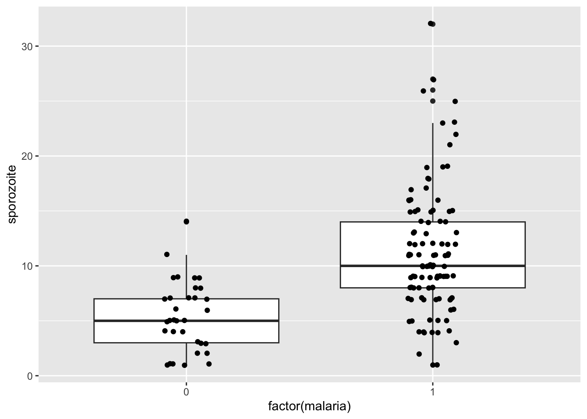
We want to think of the number of sporozoites as the predictor though, which is usually on the \(x\) axis.
## `geom_smooth()` using formula = 'y ~ x'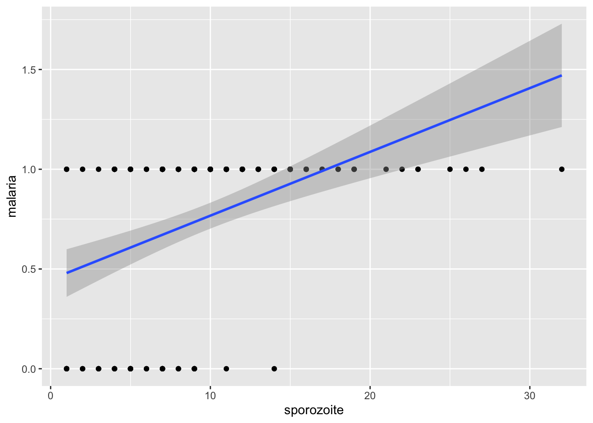
Here we see an issue with this approach: if the line is supposed to represent the probability of getting malaria, then it is impossible for the line to be above 1 or below 0, but the line does go above 1. This is a problem with using OLS to model a binary response, though it is still sometimes approrpriate in certain situations. We will use logistic regression.
ggplot(mm, aes(x = sporozoite, y = malaria)) +
geom_point() +
geom_smooth(method = "glm", method.args = list(family = "binomial"))## `geom_smooth()` using formula = 'y ~ x'
We can see with one observed sporozoite, the probability of getting malaria is about 25%, while with 20 or more, the probability is essentially 100%.
ggplot(mm, aes(x = sporozoite, y = malaria)) +
geom_point() +
geom_smooth(method = "glm", method.args = list(family = "binomial"))## `geom_smooth()` using formula = 'y ~ x'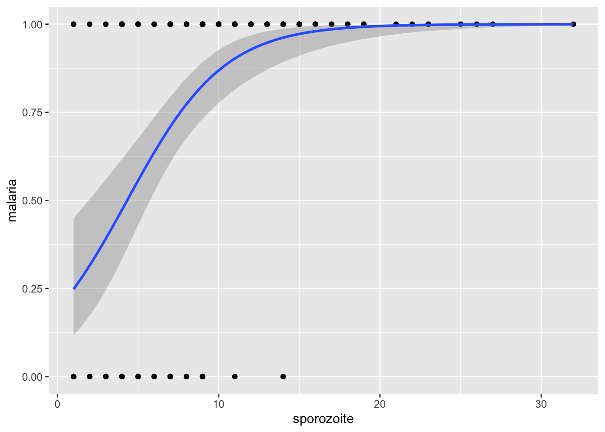
Now let’s add the antibody variable and see whether the graphs look different.
ggplot(mm, aes(x = sporozoite, y = malaria, color = factor(antibody))) +
geom_jitter(width = .2, height = 0, alpha = .5) +
geom_smooth(method = "glm", method.args = list(family = "binomial"))## `geom_smooth()` using formula = 'y ~ x'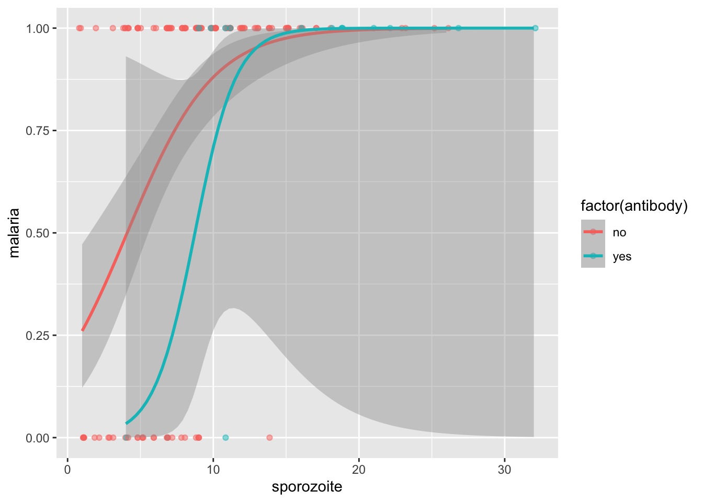
Based on this plot, it seems that having the antibody protects from mosquitos which have a low viral load, but does not help against mosquitos with a high viral load.
7.1.2 The model (theory)
Logistic regression is used to model responses that can only take two values. Such variables are called binary variables. Examples include determining whether a flipped coin comes up as Heads or Tails, whether a person recovers or doesn’t recover from a disease, or whether a person votes yes or no in an election. Many times, we have additional information that is naturally grouped with the outcome. For example, we may have a person’s age, height, weight, the amount and type of medicine they were given in addition to whether they recovered or didn’t recover from the disease. The goal is to be able to model the recovery or non-recovery from the disease on the predictors.
Let’s call the response variable \(Y\), and assume for now that we have a single continuous predictor. The response would correspond to whether the mouse got malaria in the previous example, and the predictor would be the number of sporozoites. In OLS, we model
\[ y_i = \beta_0 + \beta_1 x_i + \epsilon_i \]
so that the expected value of the response is modeled by \(\beta_0 + \beta_1 x_i\). The \(\epsilon_i\) is the error term. Reasoning similarly, we might reasonably model the expected value of the binary response as \(\beta_0 + \beta_1 x_i\). Let’s think carefully about what the expected value of a 0/1 binary random variable represents. Let \(p\) be the probability of success. Then,
\[ E[Y] = 1 * p + 0 * (1 - p) = p \]
So, modeling the expected value of the response is the same as modeling the probability of the response being 1. Then, our model would be (without the error term)
\[ p_i = \beta_0 + \beta_1 x_i \]
This is fine, but we note that for some values of the parameters and predictors, we could get probabilities that are larger than 1 or smaller than 0. This would be difficult to interpret. So, it is common to model the log-odds of the probability instead.
\[ \log \frac{p}{1 - p} = \beta_0 + \beta_1 x_i \]
The odds \(\frac{p}{p - 1}\) can be any positive number and the log-odds can be any real number. Given the log-odds \(L\) of an event, we can recompute the probability of the event via \(p = \frac{e^L}{1 + E^L}\).
Aside Interpreting log-odds. The log-odds of an event is the log of the odds of the event. The odds of an event is the probability of the event divided by the probability of the event not happening. So, if we have a 50% chance of an event happening, then the odds are 1, and the log-odds are 0. If we have a 75% chance of an event happening, then the odds are 3, and the log-odds are \(\log(3)\). If we have a 25% chance of an event happening, then the odds are \(\frac{1}{3}\), and the log-odds are \(\log(\frac{1}{3})\).
If the log-odds increases by 1, then the odds increase by a multiplicative factor of \(e\). If the log-odds increases by \(\beta_1\), then the odds increase by a factor of \(e^{\beta_1}\). So, if \(\beta_1\) is positive, then the odds of the event happening increase as \(x\) increases. If \(\beta_1\) is negative, then the odds of the event happening decrease as \(x\) increases. If \(\beta_1\) is zero, then the odds of the event happening do not change as \(x\) increases.
In the OLS model, we explicitly had an error term \(\epsilon_i\). In the logistic regression model, we don’t have an explicit error term, but we can think of the response as being a random variable that is generated according to the probabilities given by the model. That is, we can think of \(Y_i\) as being a Bernoulli random variable with parameter \(p_i\), where \(p_i\) is given by the logistic function of \(\beta_0 + \beta_1 x_i\).
7.1.3 Estimating parameters using MLE
Let’s see how to use MLE and the optim function to estimate the parameters \(\beta_0\) and \(\beta_1\) in the above model. We use the fosdata::malaria data set for specificity.
We start by noting that the likelihood of a 0/1 random variable is determined by the probability of success. If \(Y = 1\), then the likelihood of the data point is \(p\) (probability of success) and if \(Y = 0\), then the likelihood of the data point is \(1 - p\) (probability of failure). We can write this succinctly as \(p^Y (1 - p)^{1 - Y}\).
Therefore, the likelihood of observing a sequence of 0/1 random variables \(Y_1, \ldots, Y_n\) with probabilities of success \(p_1, \ldots, p_n\) is given by \(\Pi_{i = 1}^n p_i^{Y_i} (1 - p_i)^{1 - Y_i}\), where \(p_i\) is the probability of success for observation \(i\). The log of the likelihood function simplifies to \(\sum_{i = 1}^n Y_i \log(p_i) + (1 - Y_i) \log(1 - p_i)\).
Finally, we have the relationship between \(p_i\) and the predictors and parameters: \(p_i = \frac{1}{1 + e^{-\beta_0 - \beta_1 x_i}}\). Therefore, we can write the log-likelihood function in terms of \(\beta_0\) and \(\beta_1\) as follows:
mm <- fosdata::malaria
nll <- function(par) {
beta0 <- par[1]
beta1 <- par[2]
p <- boot::inv.logit(beta0 + beta1 * mm$sporozoite)
-1 * sum(mm$malaria * log(p) + (1 - mm$malaria) * log(1 - p))
}
optim(par = c(0,0), fn = nll)## $par
## [1] -2.4756270 0.4621516
##
## $value
## [1] 62.6345
##
## $counts
## function gradient
## 63 NA
##
## $convergence
## [1] 0
##
## $message
## NULLLet’s compare those to what we would get using the built-in R function glm, which is the workhorse for doing all things with fixed effect generalized linear models.
##
## Call: glm(formula = malaria ~ sporozoite, family = "binomial", data = mm)
##
## Coefficients:
## (Intercept) sporozoite
## -2.4762 0.4622
##
## Degrees of Freedom: 179 Total (i.e. Null); 178 Residual
## Null Deviance: 243.8
## Residual Deviance: 125.3 AIC: 129.37.1.4 Estimating parameters via loss function
Just like in OLS, there are alternative ways to estimate the parameters associated with logistic regression. In OLS, we saw that minimizing the SSE gave the same parameter estimates as maximizing the likelihood function. For logistic regression, the error function we want to minimize is:
\[ \frac{1}n \sum_{i = 1}^n \Phi(\eta_i y_i) \]
where \(\Phi = \log(1 + e^{-x})\) and \(y_i\) has been recoded so that 1 is success and \(-1\) is failure, and \(\eta_i = \log {p_i}{1 - p_i}\) is the log-odds of \(p_i = \beta_0 + \beta_1 x_i\). Let’s think about why this is a function that penalizes being away from the true observed values. The graph of \(\Phi\) looks like this
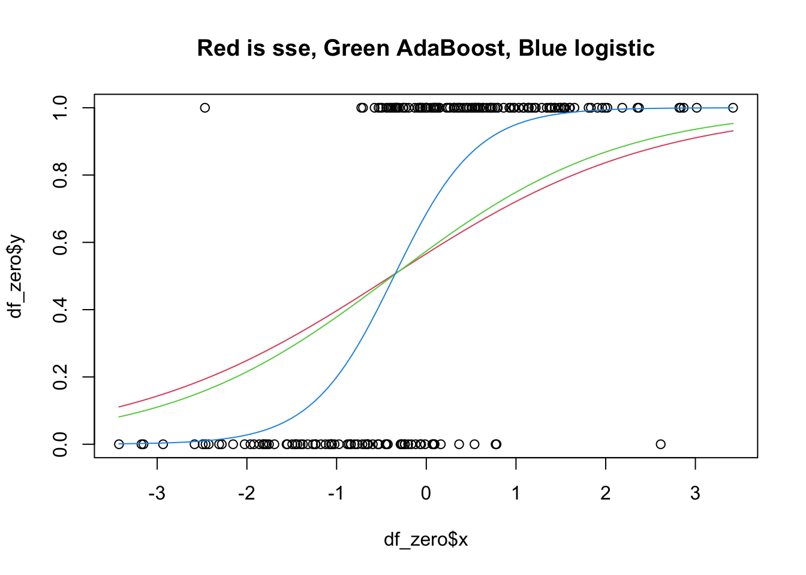
So this penalty penalizes negative values of \(\eta_i y_i\) and encourages positive values of \(\eta_i y_i\). If \(y_i\) is 1, then we want \(\eta_i\) to be positive, so that \(\eta_i y_i\) is positive. If \(y_i\) is \(-1\), then we want \(\eta_i\) to be negative, so that \(\eta_i y_i\) is positive. Therefore, this penalty encourages the model to predict positive values for the predictors when the response is 1 and negative values for the predictors when the response is \(-1\). Recall that large positive values of the log-odds correspond to high probabilities of success, and large negative values of the log-odds correspond to low probabilities of success. So, this penalty encourages the model to predict high probabilities of success when the response is 1 and low probabilities of success when the response is \(-1\).
What isn’t at all obvious is that minimizing this function will yield the same parameter estimates as maximizing the likelihood function, but let’s see it in an example.
pen <- function(par) {
beta0 <- par[1]
beta1 <- par[2]
p <- boot::inv.logit(beta0 + beta1 * mm$sporozoite)
y <- ifelse(mm$malaria == 1, 1, -1)
mean(log(1 + exp(-1 * (log(p/(1-p))) * y)))
}
optim(par = c(0,0), fn = pen)## $par
## [1] -2.4756270 0.4621516
##
## $value
## [1] 0.3479695
##
## $counts
## function gradient
## 63 NA
##
## $convergence
## [1] 0
##
## $message
## NULL7.1.5 Interpreting summary
Now, we turn to interpreting the summary of glm.
##
## Call:
## glm(formula = malaria ~ sporozoite, family = "binomial", data = mm)
##
## Coefficients:
## Estimate Std. Error z value Pr(>|z|)
## (Intercept) -2.47615 0.42771 -5.789 7.07e-09 ***
## sporozoite 0.46223 0.06451 7.166 7.74e-13 ***
## ---
## Signif. codes: 0 '***' 0.001 '**' 0.01 '*' 0.05 '.' 0.1 ' ' 1
##
## (Dispersion parameter for binomial family taken to be 1)
##
## Null deviance: 243.81 on 179 degrees of freedom
## Residual deviance: 125.27 on 178 degrees of freedom
## AIC: 129.27
##
## Number of Fisher Scoring iterations: 6We have an estimate for intercept of -1.44 and for \(\beta_1\) of 0.33341. The intercept tells us the log-odds of getting malaria when the number of sporozoites is 0 (according to the model - we actually know this is zero). The log-odds of getting malaria when the number of sporozoites is 0 is -1.44, which corresponds to a probability of getting malaria of \(\frac{e^{-1.44}}{1 + e^{-1.44}}\). In R, this is computed via the boot::inv.logit(-1.44) function, which gives us a probability of about 0.19. So, according to the model, the probability of getting malaria when the number of sporozoites is 0 is about 19%.
The sporozoite estimate tells us that the log-odds of getting malaria increases by 0.33341 for every one unit increase in the number of sporozoites. Therefore, the odds of getting malaria will increase by a multiplicative factor of \(e^{0.33341}\) for every one unit increase in the number of sporozoites. In R, this is computed via exp(0.33341), which gives us a multiplicative factor of about 1.4. So, according to the model, the odds of getting malaria will increase by a factor of about 40 percent for every one unit increase in the number of sporozoites.
The standard error, \(z\) value and \(p\) value have meanings similar to what we covered in OLS. The deviance plays a similar role to the sum of squared errors in OLS, and the null deviance is the deviance of the model with only an intercept. The difference between the null deviance and the residual deviance is a measure of how much better the model with the predictor is compared to the model with only an intercept. Formally, the null deviance is defined as -2 times the log likelihood of the model with only an intercept, and the residual deviance is defined as -2 times the log likelihood of the model with the predictor. Therefore, the difference between the null deviance and the residual deviance is 2 times the difference in log likelihoods between the two models. This can be used to perform a likelihood ratio test to determine whether the model with the predictor is significantly better than the model with only an intercept. Since we have already computed the likelihood, we can quickly confirm the deviance computations.
## [1] 132.599This should be the same as the residual deviance in the summary output, which it is!
We can compute an analogy of \(R^2\) for logistic regression, which is called McFadden’s \(R^2\). This is defined as \(1 - \frac{\text{residual deviance}}{\text{null deviance}}\). In R, this is computed as follows:
## [1] 0.4862102## Classes and Methods for R originally developed in the
## Political Science Computational Laboratory
## Department of Political Science
## Stanford University (2002-2015),
## by and under the direction of Simon Jackman.
## hurdle and zeroinfl functions by Achim Zeileis.## fitting null model for pseudo-r2## llh llhNull G2 McFadden r2ML r2CU
## -62.6345017 -121.9068723 118.5447411 0.4862102 0.4824152 0.6502174We can also perform a hypothesis test on which of two models is better. For example, we can compare the model with the predictor sporozoite to the model with sporozoite and antibody.
##
## Call:
## glm(formula = malaria ~ sporozoite + antibody, family = "binomial",
## data = mm)
##
## Coefficients:
## Estimate Std. Error z value Pr(>|z|)
## (Intercept) -2.5171 0.4348 -5.789 7.07e-09 ***
## sporozoite 0.4855 0.0680 7.140 9.35e-13 ***
## antibodyyes -1.5483 0.9399 -1.647 0.0995 .
## ---
## Signif. codes: 0 '***' 0.001 '**' 0.01 '*' 0.05 '.' 0.1 ' ' 1
##
## (Dispersion parameter for binomial family taken to be 1)
##
## Null deviance: 243.81 on 179 degrees of freedom
## Residual deviance: 122.75 on 177 degrees of freedom
## AIC: 128.75
##
## Number of Fisher Scoring iterations: 6## Analysis of Deviance Table
##
## Model 1: malaria ~ sporozoite
## Model 2: malaria ~ sporozoite + antibody
## Resid. Df Resid. Dev Df Deviance Pr(>Chi)
## 1 178 125.27
## 2 177 122.75 1 2.5192 0.1125Note that there is not statistically significant evidence that the model with antibody is better than the model with just sporozoite. We could also have looked directly at the \(p\)-values in summary(mod2):
##
## Call:
## glm(formula = malaria ~ sporozoite + antibody, family = "binomial",
## data = mm)
##
## Coefficients:
## Estimate Std. Error z value Pr(>|z|)
## (Intercept) -2.5171 0.4348 -5.789 7.07e-09 ***
## sporozoite 0.4855 0.0680 7.140 9.35e-13 ***
## antibodyyes -1.5483 0.9399 -1.647 0.0995 .
## ---
## Signif. codes: 0 '***' 0.001 '**' 0.01 '*' 0.05 '.' 0.1 ' ' 1
##
## (Dispersion parameter for binomial family taken to be 1)
##
## Null deviance: 243.81 on 179 degrees of freedom
## Residual deviance: 122.75 on 177 degrees of freedom
## AIC: 128.75
##
## Number of Fisher Scoring iterations: 6We get slightly different \(p\)-values because the tests use different assumptions. One utility of the test using deviances is that it can be used to test the null hypothesis that a group of parameters is all zero versus the alternative that at least one of them is non-zero, which is not something that we can do with the \(p\)-values in summary(mod2). For the test using deviances to be valid, the models must be nested. If the models are not nested, then it is common to use AIC to decide between the models, rather than a formal hypothesis test.
## df AIC
## mod 2 129.2690
## mod2 3 128.7498Note that AIC chooses the model with antibodies while deviances eliminate antibodies. This goes back to the purpose of the two techniques - there are some theoretical reasons to prefer AIC for predictive modeling, and using \(p\)-values is sometimes prefered for building parsimonious or explanatory models. For completeness, we could also include the interaction between sporozoites and antibody:
##
## Call:
## glm(formula = malaria ~ sporozoite * antibody, family = "binomial",
## data = mm)
##
## Coefficients:
## Estimate Std. Error z value Pr(>|z|)
## (Intercept) -2.4838 0.4366 -5.690 1.27e-08 ***
## sporozoite 0.4793 0.0686 6.986 2.82e-12 ***
## antibodyyes -3.6978 5.0717 -0.729 0.466
## sporozoite:antibodyyes 0.2279 0.5235 0.435 0.663
## ---
## Signif. codes: 0 '***' 0.001 '**' 0.01 '*' 0.05 '.' 0.1 ' ' 1
##
## (Dispersion parameter for binomial family taken to be 1)
##
## Null deviance: 243.81 on 179 degrees of freedom
## Residual deviance: 122.50 on 176 degrees of freedom
## AIC: 130.5
##
## Number of Fisher Scoring iterations: 8The model coefficients are (Intercept), which is the log-odds of getting malaria when the mosquito has zero sporozoites and the mouse does not have the antibody, sporozoite, which is the change in log-odds of getting malaria for every one unit increase in the number of sporozoites when the mouse does not have the antibody, antibody, which is the change in log-odds of getting malaria for having the antibody when the number of sporozoites is zero, and sporozoite:antibody, which is the change in log-odds of getting malaria for every one unit increase in the number of sporozoites when the mouse has the antibody compared to when it does not have the antibody.
Note: it can be hard to directly see whether the positive antibody is associated with more malaria or less malaria in the model with interaction. For example, if the typical mosquito has 50 sporozoites, then the effect of the antibody on the log-odds of getting malaria would be \(-1.38 + (0.34 + .37) * 50 - 4.8\), compared to \(-1.38 + .34 * 50\) for the antibody negative mice. The difference in these is \(.37 * 50 - 4.8 = 13.7\), which means our model would say it is much more likely to get malaria with the antibodies.
We can also use the predict function to get point predictions and confidence intervals for the probability of getting malaria associated with sporozoites and antibodies. We return to the model with sporozoite and antibody. You can read about the options in predict by typing predict.glm. Note that predict is a generic function which has different behavior depending on whether the object passed to it was fit using lm or glm. The one we had been using was predict.lm.
## 1
## 0.7896223predict(mod2, newdata = data.frame(sporozoite = 10, antibody = "yes"), type = "response") #probability## 1
## 0.6877502predict(mod2, newdata = data.frame(sporozoite = 10, antibody = "no"), type = "response", se.fit = T) ## $fit
## 1
## 0.9119706
##
## $se.fit
## 1
## 0.03177582
##
## $residual.scale
## [1] 1Note that we would want to interpret the standard error with caution here. First of all, it is the value that corresponds to confidence intervals in OLS, not prediction intervals. Second, it would be non-standard to compute a two-sided confidence interval for \(p\) by taking \(0.8868761 \pm 2 * 0.03624307\). A better way to compute a confidence interval would be to compute the symmetric interval in the log-odds scale, and convert it into the probability scale.
## $fit
## 1
## 2.337937
##
## $se.fit
## [1] 0.3958114
##
## $residual.scale
## [1] 1## [1] 0.9416801## [1] 0.7919504When communicating results from logistic regression, it can be challenging to explain your results. The marginaleffects package has methods which allow for easier interpretation. First, we look at the average marginal effect. The average marginal effect of sporozoite estimates the derivative of the probability of getting malaria at each of the 139 data points and averages them. This gives an estimate for the average effect that a one unit change in sporozoite will have; where average means averging over the observed data.
## Warning: package 'marginaleffects' was built under R version 4.5.2##
## Call:
## glm(formula = malaria ~ sporozoite + antibody, family = "binomial",
## data = mm)
##
## Coefficients:
## Estimate Std. Error z value Pr(>|z|)
## (Intercept) -2.5171 0.4348 -5.789 7.07e-09 ***
## sporozoite 0.4855 0.0680 7.140 9.35e-13 ***
## antibodyyes -1.5483 0.9399 -1.647 0.0995 .
## ---
## Signif. codes: 0 '***' 0.001 '**' 0.01 '*' 0.05 '.' 0.1 ' ' 1
##
## (Dispersion parameter for binomial family taken to be 1)
##
## Null deviance: 243.81 on 179 degrees of freedom
## Residual deviance: 122.75 on 177 degrees of freedom
## AIC: 128.75
##
## Number of Fisher Scoring iterations: 6##
## Term Contrast Estimate Std. Error z Pr(>|z|) S 2.5 % 97.5 %
## antibody yes - no -0.1648 0.097257 -1.69 0.0902 3.5 -0.3554 0.0258
## sporozoite dY/dX 0.0512 0.000953 53.73 <0.001 Inf 0.0493 0.0531
##
## Type: responseThe avg_slopes function estimates the derivative or the probability with respect to a continuous predictor, or the change in probability per category change for categorical predictors. This is often what you want to do, but in the case of sporozoite, the predictor is actually count data, so the derivative is hard to interpret. The avg_comparisons function estimates the change in probability for a one unit change in a continuous predictor, so for the case of sporozoites, it would estimate the average increase in probability assocaited with a one sporozoite increase.
##
## Term Contrast Estimate Std. Error z Pr(>|z|) S 2.5 % 97.5 %
## antibody yes - no -0.1648 0.097257 -1.69 0.0902 3.5 -0.3554 0.0258
## sporozoite +1 0.0506 0.000905 55.94 <0.001 Inf 0.0488 0.0524
##
## Type: responseSometimes, it is desirable to get the effect of a different unit of change.
## [1] 10##
## Estimate Std. Error z Pr(>|z|) S 2.5 % 97.5 %
## 0.386 0.0206 18.7 <0.001 256.2 0.345 0.426
##
## Term: sporozoite
## Type: response
## Comparison: +10On average, the probability of getting malaria increases by about 4.44 percentage points per increase in sporozoite. An increase of 6 spororzoites is associated with a 18.5 percentage point increase in the probability of getting malaria, averaged across conditions in the data set. Of course, neither of these statements is true when there are already 25 sporozoites, as the probability is already essentiall 1. Similarly, the average effect of not having the antibody is a 19 percentage point increase in the probability of getting malaria. We can rederive the result of avg_comparisons (without confidence bands):
p1 <- predict(mod2, type = "response")
p2 <- predict(mod2, newdata = mm |> mutate(sporozoite = sporozoite + 1), type = "response")
mean(p2 - p1)## [1] 0.05061776We can also directly visualize the probabilities.

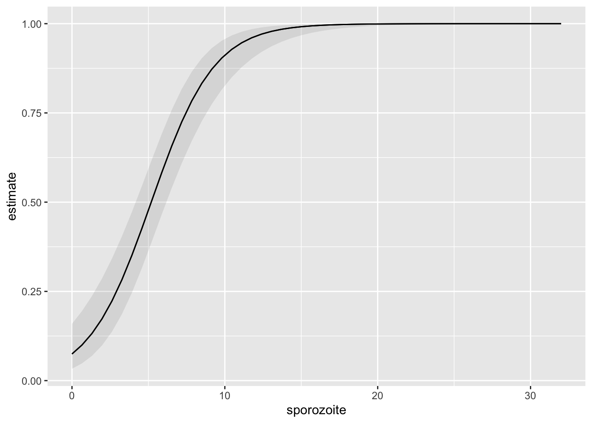
This gives the probabilities at each sporozoite level; the other values are set at their mean or mode. In the case of sporozoite, the default is that the antibody is set to no.
##
## sporozoite Estimate Std. Error z Pr(>|z|) S 2.5 % 97.5 %
## 1 0.116 0.0389 2.98 0.00289 8.4 0.0397 0.192
##
## Type: response## 1
## 0.1159286avg_predictions(mod2, newdata = datagrid(sporozoite = 1, grid_type = "counterfactual")) #averages over the values observed in study##
## Estimate Std. Error z Pr(>|z|) S 2.5 % 97.5 %
## 0.108 0.0366 2.95 0.00315 8.3 0.0363 0.18
##
## Type: response## [1] 0.1080348The word marginal generally means to average over the other values. If we want to average the probabilities over the values observed in the data, then we need to specify.
plot_predictions(mod2, by = "sporozoite", newdata = datagrid(sporozoite = seq(0, 30, by = 0.5), grid_type = "counterfactual"))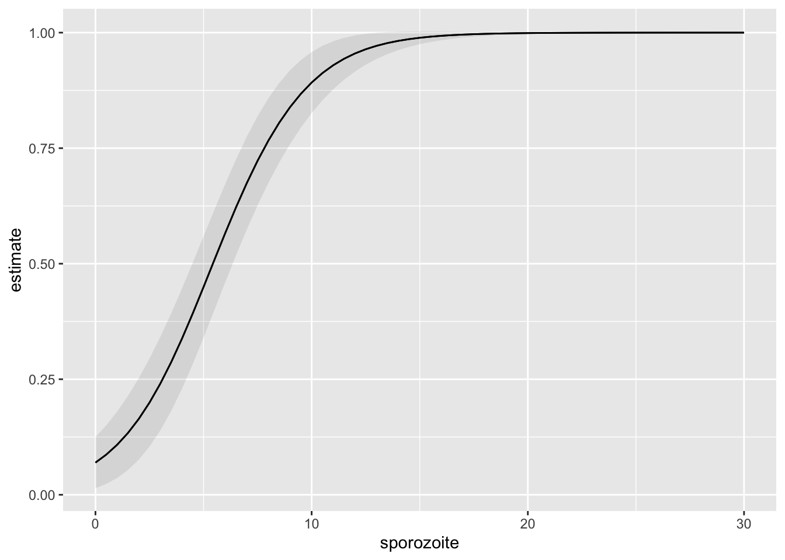
7.2 Mixed Effects Logistic Regression
Let’s consider the Contraception data set in the mlmRev package. The goal is to model contraceptive usage among women in Bangladesh. This is an exploratory analysis.
## woman district use livch age urban
## 1 : 1 14 : 118 N:1175 0 :530 Min. :-13.560000 N:1372
## 2 : 1 1 : 117 Y: 759 1 :356 1st Qu.: -7.559900 Y: 562
## 3 : 1 46 : 86 2 :305 Median : -1.559900
## 4 : 1 25 : 67 3+:743 Mean : 0.002198
## 5 : 1 6 : 65 3rd Qu.: 6.440000
## 6 : 1 30 : 61 Max. : 19.440000
## (Other):1928 (Other):1420There are 60 different districts, and we aren’t interested in modeling each one separately, but rather in modeling the spread among the districts using district as a random effect.
mod1 <- lme4::glmer(use ~ livch + age + urban + (1|district), data = cc, family = "binomial")
summary(mod1)## Generalized linear mixed model fit by maximum likelihood (Laplace
## Approximation) [glmerMod]
## Family: binomial ( logit )
## Formula: use ~ livch + age + urban + (1 | district)
## Data: cc
##
## AIC BIC logLik -2*log(L) df.resid
## 2427.6 2466.6 -1206.8 2413.6 1927
##
## Scaled residuals:
## Min 1Q Median 3Q Max
## -1.8225 -0.7659 -0.5085 0.9983 2.7200
##
## Random effects:
## Groups Name Variance Std.Dev.
## district (Intercept) 0.2124 0.4608
## Number of obs: 1934, groups: district, 60
##
## Fixed effects:
## Estimate Std. Error z value Pr(>|z|)
## (Intercept) -1.689648 0.147333 -11.468 < 2e-16 ***
## livch1 1.109125 0.157851 7.026 2.12e-12 ***
## livch2 1.376341 0.174641 7.881 3.25e-15 ***
## livch3+ 1.345184 0.179411 7.498 6.49e-14 ***
## age -0.026594 0.007879 -3.375 0.000738 ***
## urbanY 0.732979 0.119386 6.140 8.28e-10 ***
## ---
## Signif. codes: 0 '***' 0.001 '**' 0.01 '*' 0.05 '.' 0.1 ' ' 1
##
## Correlation of Fixed Effects:
## (Intr) livch1 livch2 lvch3+ age
## livch1 -0.590
## livch2 -0.633 0.489
## livch3+ -0.752 0.540 0.620
## age 0.449 -0.213 -0.380 -0.675
## urbanY -0.289 0.055 0.089 0.092 -0.044mod2 <- lme4::glmer(use ~ livch + age + urban + (1 + urban|district), data = cc, family = "binomial")## Warning in checkConv(attr(opt, "derivs"), opt$par, ctrl = control$checkConv, : Model failed to converge with max|grad| = 0.00307215 (tol = 0.002, component 1)
## See ?lme4::convergence and ?lme4::troubleshooting.## Generalized linear mixed model fit by maximum likelihood (Laplace
## Approximation) [glmerMod]
## Family: binomial ( logit )
## Formula: use ~ livch + age + urban + (1 + urban | district)
## Data: cc
##
## AIC BIC logLik -2*log(L) df.resid
## 2417.0 2467.1 -1199.5 2399.0 1925
##
## Scaled residuals:
## Min 1Q Median 3Q Max
## -1.9127 -0.7456 -0.4933 0.9335 2.9270
##
## Random effects:
## Groups Name Variance Std.Dev. Corr
## district (Intercept) 0.3811 0.6173
## urbanY 0.6418 0.8011 -0.80
## Number of obs: 1934, groups: district, 60
##
## Fixed effects:
## Estimate Std. Error z value Pr(>|z|)
## (Intercept) -1.711588 0.159615 -10.723 < 2e-16 ***
## livch1 1.125511 0.159895 7.039 1.94e-12 ***
## livch2 1.368152 0.176844 7.736 1.02e-14 ***
## livch3+ 1.354560 0.182403 7.426 1.12e-13 ***
## age -0.026515 0.008001 -3.314 0.000919 ***
## urbanY 0.815111 0.169708 4.803 1.56e-06 ***
## ---
## Signif. codes: 0 '***' 0.001 '**' 0.01 '*' 0.05 '.' 0.1 ' ' 1
##
## Correlation of Fixed Effects:
## (Intr) livch1 livch2 lvch3+ age
## livch1 -0.550
## livch2 -0.590 0.487
## livch3+ -0.701 0.538 0.617
## age 0.422 -0.212 -0.380 -0.675
## urbanY -0.473 0.042 0.066 0.062 -0.035
## optimizer (Nelder_Mead) convergence code: 0 (OK)
## Model failed to converge with max|grad| = 0.00307215 (tol = 0.002, component 1)
## See ?lme4::convergence and ?lme4::troubleshooting.Let’s think carefully about what the difference in the two models is. In the first model, we are allowing the intercept to vary across districts, but we are assuming that the effect of urban is the same across all districts. In the second model, we are allowing both the intercept and the effect of urban to vary across districts. The second model is more flexible, but it also has more parameters, so we would want to use AIC or a likelihood ratio test to determine which model is better.
Looking at the coefficients, it appears that there may only be a difference between having a child and not having a child as it pertains to contraceptive use. Let’s see how we can test that.
cc$anychild <- factor(ifelse(cc$livch == "0", "none", "any"))
mod3 <- lme4::glmer(use ~ anychild + age + urban + (1 + urban | district),
data = cc, family = "binomial")
summary(mod3)## Generalized linear mixed model fit by maximum likelihood (Laplace
## Approximation) [glmerMod]
## Family: binomial ( logit )
## Formula: use ~ anychild + age + urban + (1 + urban | district)
## Data: cc
##
## AIC BIC logLik -2*log(L) df.resid
## 2415.5 2454.5 -1200.8 2401.5 1927
##
## Scaled residuals:
## Min 1Q Median 3Q Max
## -1.8993 -0.7411 -0.4945 0.9420 2.9162
##
## Random effects:
## Groups Name Variance Std.Dev. Corr
## district (Intercept) 0.3772 0.6142
## urbanY 0.6580 0.8112 -0.80
## Number of obs: 1934, groups: district, 60
##
## Fixed effects:
## Estimate Std. Error z value Pr(>|z|)
## (Intercept) -0.424246 0.109757 -3.865 0.000111 ***
## anychildnone -1.241581 0.141641 -8.766 < 2e-16 ***
## age -0.021407 0.006635 -3.226 0.001254 **
## urbanY 0.807606 0.170437 4.738 2.15e-06 ***
## ---
## Signif. codes: 0 '***' 0.001 '**' 0.01 '*' 0.05 '.' 0.1 ' ' 1
##
## Correlation of Fixed Effects:
## (Intr) anychl age
## anychildnon -0.268
## age -0.162 0.507
## urbanY -0.598 -0.064 -0.027## Data: cc
## Models:
## mod3: use ~ anychild + age + urban + (1 + urban | district)
## mod2: use ~ livch + age + urban + (1 + urban | district)
## npar AIC BIC logLik -2*log(L) Chisq Df Pr(>Chisq)
## mod3 7 2415.5 2454.5 -1200.8 2401.5
## mod2 9 2417.0 2467.1 -1199.5 2399.0 2.5109 2 0.2849Indeed, the effect is based on whether there is a child at all; not how many children. Finally, let’s examine the age variable. It seems unlikely that contraceptive use depends only on age; it seems plausible that usage would increase up to a certain age, and then start to decrease again. Let’s add a quadratic term and see what we get.
cc$agec <- cc$age - mean(cc$age)
cc$agec <- cc$agec/sd(cc$agec)
mod4 <- lme4::glmer(use ~ anychild + agec + I(agec^2) + urban + (1 + urban | district),
data = cc, family = "binomial")
summary(mod4)## Generalized linear mixed model fit by maximum likelihood (Laplace
## Approximation) [glmerMod]
## Family: binomial ( logit )
## Formula: use ~ anychild + agec + I(agec^2) + urban + (1 + urban | district)
## Data: cc
##
## AIC BIC logLik -2*log(L) df.resid
## 2377.0 2421.5 -1180.5 2361.0 1926
##
## Scaled residuals:
## Min 1Q Median 3Q Max
## -1.8820 -0.7463 -0.4476 0.8967 3.0666
##
## Random effects:
## Groups Name Variance Std.Dev. Corr
## district (Intercept) 0.3824 0.6184
## urbanY 0.5454 0.7385 -0.79
## Number of obs: 1934, groups: district, 60
##
## Fixed effects:
## Estimate Std. Error z value Pr(>|z|)
## (Intercept) -0.16493 0.11736 -1.405 0.16
## anychildnone -0.87229 0.15015 -5.809 6.27e-09 ***
## agec 0.05201 0.07194 0.723 0.47
## I(agec^2) -0.36992 0.05925 -6.243 4.29e-10 ***
## urbanY 0.77019 0.16408 4.694 2.68e-06 ***
## ---
## Signif. codes: 0 '***' 0.001 '**' 0.01 '*' 0.05 '.' 0.1 ' ' 1
##
## Correlation of Fixed Effects:
## (Intr) anychl agec I(g^2)
## anychildnon -0.110
## agec 0.053 0.567
## I(agec^2) -0.338 -0.349 -0.507
## urbanY -0.558 -0.074 -0.035 0.019## Data: cc
## Models:
## mod3: use ~ anychild + age + urban + (1 + urban | district)
## mod4: use ~ anychild + agec + I(agec^2) + urban + (1 + urban | district)
## npar AIC BIC logLik -2*log(L) Chisq Df Pr(>Chisq)
## mod3 7 2415.5 2454.5 -1200.8 2401.5
## mod4 8 2377.0 2421.5 -1180.5 2361.0 40.551 1 1.915e-10 ***
## ---
## Signif. codes: 0 '***' 0.001 '**' 0.01 '*' 0.05 '.' 0.1 ' ' 1The quadratic term is significant. We can compute the marginal effect of age by averaging over the other observed values in the data set, as below. When doing this, you need to find the approximate largest and smallest value of the by variable in your data, and create a sequence of values from the minimum to the maximumm.
## Min. 1st Qu. Median Mean 3rd Qu. Max.
## -1.5047 -0.8390 -0.1733 0.0000 0.7143 2.1566plot_predictions(mod4, by = "agec", type = "response", newdata = datagrid(agec = seq(-1.5, 2.2, by = 0.1), grid_type = "counterfactual"))## Warning: For this model type, `marginaleffects` only takes into account the
## uncertainty in fixed-effect parameters. This is often appropriate when
## `re.form=NA`, but may be surprising to users who set `re.form=NULL` (default)
## or to some other value. Call `options(marginaleffects_safe = FALSE)` to silence
## this warning.
## Warning: For this model type, `marginaleffects` only takes into account the
## uncertainty in fixed-effect parameters. This is often appropriate when
## `re.form=NA`, but may be surprising to users who set `re.form=NULL` (default)
## or to some other value. Call `options(marginaleffects_safe = FALSE)` to silence
## this warning.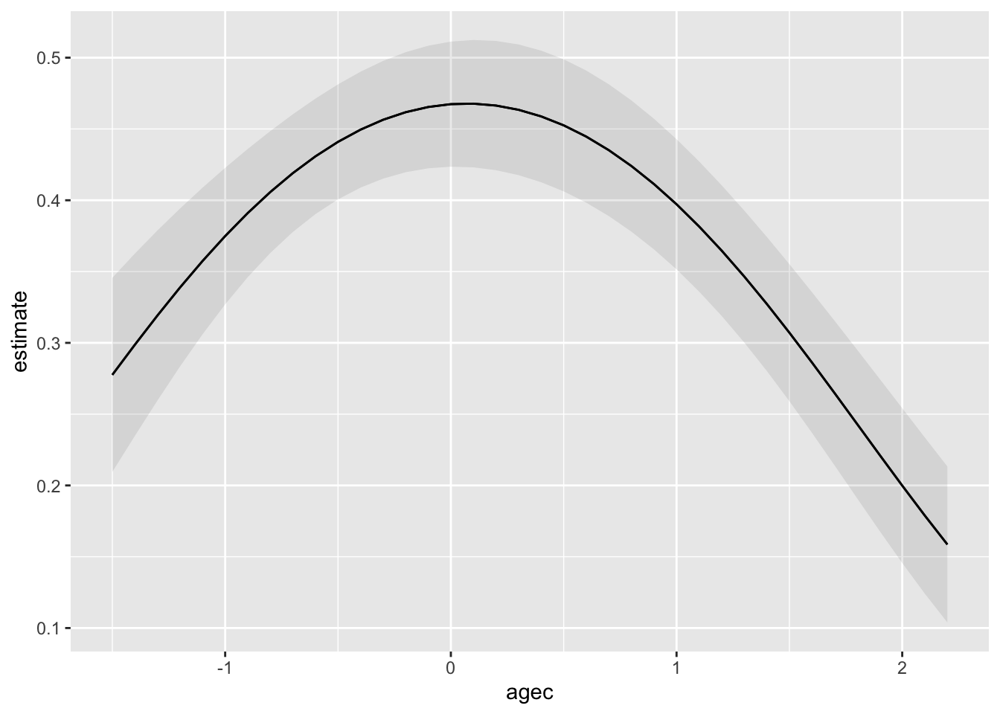
Alternatively, you could plot the estimates contraceptive use by age for typical values of the other covariates. Typical in this case means either mean for numeric variables or mode for categorical data, and the random effect is considered to be zero. In this instance, there are only small differences in the two plots, but as a general rule for mixed effect models, I would default to the marginal effect above.
## Warning: For this model type, `marginaleffects` only takes into account the
## uncertainty in fixed-effect parameters. This is often appropriate when
## `re.form=NA`, but may be surprising to users who set `re.form=NULL` (default)
## or to some other value. Call `options(marginaleffects_safe = FALSE)` to silence
## this warning.
## Warning: For this model type, `marginaleffects` only takes into account the
## uncertainty in fixed-effect parameters. This is often appropriate when
## `re.form=NA`, but may be surprising to users who set `re.form=NULL` (default)
## or to some other value. Call `options(marginaleffects_safe = FALSE)` to silence
## this warning.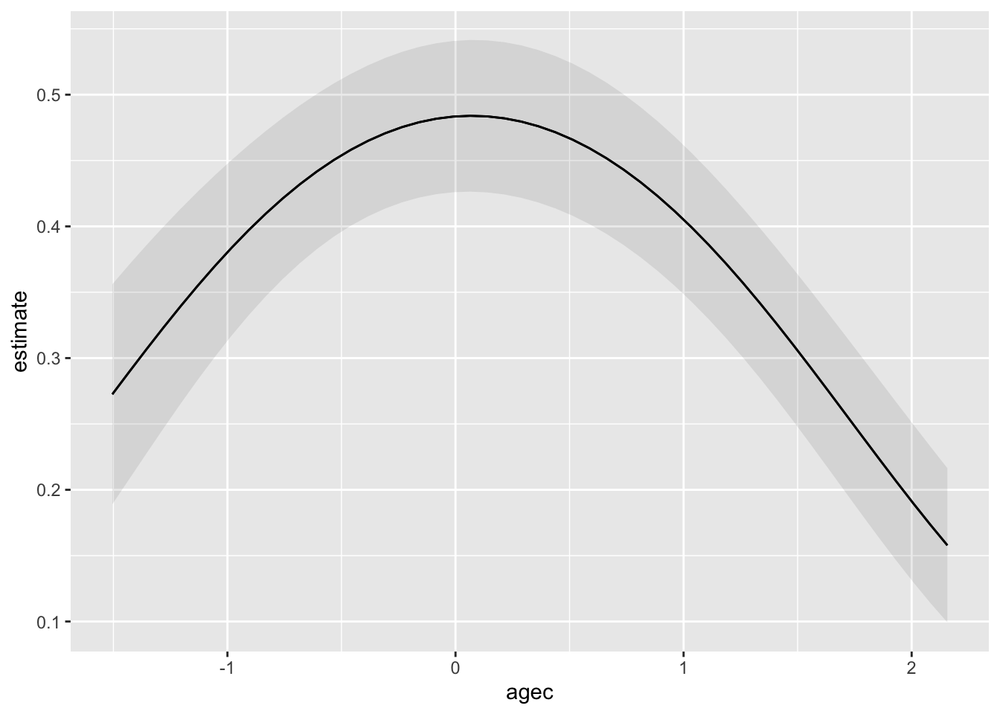
To get estimates that are more interpretable than the log-odds estimates, we can again use marginaleffects. Note that the marginal effect of age is not easily interpretable, because of the quadratic nature of that relationship.
## Warning: For this model type, `marginaleffects` only takes into account the
## uncertainty in fixed-effect parameters. This is often appropriate when
## `re.form=NA`, but may be surprising to users who set `re.form=NULL` (default)
## or to some other value. Call `options(marginaleffects_safe = FALSE)` to silence
## this warning.##
## Term Contrast Estimate Std. Error z Pr(>|z|) S 2.5 % 97.5 %
## agec dY/dX 0.00772 0.0134 0.577 0.564 0.8 -0.0185 0.0339
## anychild none - any -0.17687 0.0287 -6.154 <0.001 30.3 -0.2332 -0.1205
## urban Y - N 0.16335 0.0356 4.592 <0.001 17.8 0.0936 0.2331
##
## Type: responseThis indicates that having a child is associated with a 0.17687 increase in the probability scale; that is, an 18 percentage point increase in contraceptive use averaged across all data points, and urban areas are associated with a 16 percentage point increase in contraceptive use, averaging over the other covariates in the study.
Now that we have seen an example, let’s write out the model for mixed effect logistic regression explicitly. Suppose we have one continuous predictor \(x\), then the random intercepts model would be
\[ \log \frac{p_{ij}}{1 - p_{ij}} = \beta_0 + \beta_1 x_{ij} + u_j \]
where \(p_{ij}\) is the probability of success for observation \(i\) in group \(j\), \(\beta_0\) is the fixed intercept, \(\beta_1\) is the fixed effect of the predictor, and \(u_j\) is the random effect for group \(j\). The random effects are assumed to be normally distributed with mean 0 and variance \(\sigma^2_u\). The error term is not explicitly included in this model, but we can think of the response as being a Bernoulli random variable with parameter \(p_{ij}\), where \(p_{ij}\) is given by the logistic function of \(\beta_0 + \beta_1 x_{ij} + u_j\).
7.2.1 Nested random effects
In the data set ardata::beethoven_tempos, we had two categorical variables symphony and movement. Each symphony consisted of 4 movements, numbered 1-4. So, the data point movement==1 could mean different things for each symphony. We day that movement is nested in symphony. If we want to correctly identify this in a mixed effect model, the random effect should be written as (1|symphony/movement). This ensures that R understands that movement is nested inside of symphony. Let’s look at the guImmun data in the mlmRev package.
## kid mom comm immun kid2p mom25p
## 2 : 1 310 : 3 185 : 55 N:1195 N: 493 N:1038
## 269 : 1 384 : 3 210 : 50 Y: 964 Y:1666 Y:1121
## 272 : 1 456 : 3 226 : 34
## 273 : 1 464 : 3 227 : 32
## 274 : 1 498 : 3 174 : 30
## 275 : 1 514 : 3 188 : 30
## (Other):2153 (Other):2141 (Other):1928
## ord ethn mom_ed hus_ed mom_work rural pc_ind81
## 01:380 L:1283 N:1050 N: 676 N:1187 N: 519 Min. :0.006683
## 23:740 N: 374 P: 963 P:1056 Y: 972 Y:1640 1st Qu.:0.080635
## 46:721 S: 502 S: 146 S: 245 Median :0.506864
## 7p:318 U: 182 Mean :0.466552
## 3rd Qu.:0.834860
## Max. :0.995884
## In this case, we see that we have two possible random effects: community and mom, with mom nested inside of community. If each mom is given a unique identifier, then we are OK, but to be safe, we can indicate the random effect of mom and comm via (1|comm/mom). This is good practice because it indicates that we know that the random effects are nested, even if it is not necessary for a given data set.
7.3 Count Regression
In this section, we suppose that the response variable is a count of some object. For example, the number of times a person goes to the doctor in a year, the number of times a person goes to the gym in a week, or the number of times a person eats out in a month. A common model for count data is the Poisson regression model. In this model, we assume that the response variable \(Y\) is a Poisson random variable with mean parameter \(\lambda\), where \(\lambda\) is given by the exponential function of a linear combination of the predictors. Since counts can only be nonnegative numbers, the expected number of occurences will be positive and we model
\[ log E[Y] = log \lambda = \beta_0 + \beta_1 x_1 + \ldots + \beta_P x_P \]
The error term is not explicitly included in this model, but we can think of the response as being a Poisson random variable with parameter \(\lambda\), where \(\lambda\) is given by the exponential function of a linear combination of the predictors.
We illustrate this by looking at the bioChemists data set in the pscl package. We wish to model art, the count of articles produced during the last 3 years of the Ph.D. In this example, we only model it on ment, which is the count of articles produced by Ph.D. mentor during the last 3 years, which we treat as numeric.
The model is
\[ \log \lambda_i = \beta_0 + \beta_1 x_i \]
whre \(\lambda_i\) is the expected number of articles produced by the \(i\)th Ph.D. student, \(\beta_0\) is the expected number of articles produced by a Ph.D. student whose mentor has produced 0 articles, and \(\beta_1\) is the change in the expected number of articles produced by the Ph.D. student for every one article increase in the number of articles produced by the mentor.
The likelihood of the data given values of \(\beta_0\) and \(\beta_1\) is
\[
\Pi_{i = 1}^n \mathtext{dpois}(y_i, \beta_0 + \beta_1 x_i)
\]
or taking logs, it is sum(dpois(y, betao + beta1 x, log = T)). This is the function we want to maximize for our MLE.
bb <- pscl::bioChemists
nll <- function(par) {
beta0 <- par[1]
beta1 <- par[2]
-1 * sum(dpois(bb$art, exp(beta0 + beta1 * bb$ment), log = T))
}
optim(par = c(0,0), fn = nll)## $par
## [1] 0.25982271 0.02604641
##
## $value
## [1] 1668.643
##
## $counts
## function gradient
## 63 NA
##
## $convergence
## [1] 0
##
## $message
## NULLWe get an estimate of 0.26 for \(\beta_0\) and 0.026 for \(\beta_1\). Let’s compare with glm.
##
## Call: glm(formula = art ~ ment, family = poisson, data = bb)
##
## Coefficients:
## (Intercept) ment
## 0.25991 0.02605
##
## Degrees of Freedom: 914 Total (i.e. Null); 913 Residual
## Null Deviance: 1817
## Residual Deviance: 1670 AIC: 3341Let’s now model the number of articles carefully on the other variables.
##
## Call:
## glm(formula = art ~ fem + mar + kid5 + phd + ment, family = poisson,
## data = bb)
##
## Coefficients:
## Estimate Std. Error z value Pr(>|z|)
## (Intercept) 0.304617 0.102981 2.958 0.0031 **
## femWomen -0.224594 0.054613 -4.112 3.92e-05 ***
## marMarried 0.155243 0.061374 2.529 0.0114 *
## kid5 -0.184883 0.040127 -4.607 4.08e-06 ***
## phd 0.012823 0.026397 0.486 0.6271
## ment 0.025543 0.002006 12.733 < 2e-16 ***
## ---
## Signif. codes: 0 '***' 0.001 '**' 0.01 '*' 0.05 '.' 0.1 ' ' 1
##
## (Dispersion parameter for poisson family taken to be 1)
##
## Null deviance: 1817.4 on 914 degrees of freedom
## Residual deviance: 1634.4 on 909 degrees of freedom
## AIC: 3314.1
##
## Number of Fisher Scoring iterations: 5Recall that our model says that the expected value of the response is given by an affine combination of the predictors, and the observed value of the response is a sample from a Poisson random variable with that expected value. Poisson random variables have the property that their variance is equal to their mean. This will be one of our two primary diagnostics when seeing whether we have appropriately modeled a count variable.
To intuitively test whether the expected value is equal to the variance, we can compute all of the expected values
and then use these to estimate the variance:
## [1] 1.692896## [1] 3.705687We see that we have a rough estimate of 3.7 for the variance and 1.7 for the mean. This indicates that the variance might be larger than the mean, in which case we say the response is overdispersed or exhibits overdispersion.
Here are three more principled approaches to estimating the dispersion:
## [1] 1.816991mod$deviance/mod$df.residual #this is very common in R, because you can read it directly off of summary(mod)## [1] 1.797988## # Overdispersion test
##
## dispersion ratio = 1.829
## Pearson's Chi-Squared = 1662.547
## p-value = < 0.001## Overdispersion detected.However you slice it, it appears that the data is not well-modeled by Poisson regression. One option for proceeding is to use quasipoisson, and this is often done in base R.
##
## Call:
## glm(formula = art ~ fem + mar + kid5 + phd + ment, family = quasipoisson,
## data = bb)
##
## Coefficients:
## Estimate Std. Error t value Pr(>|t|)
## (Intercept) 0.304617 0.139273 2.187 0.028983 *
## femWomen -0.224594 0.073860 -3.041 0.002427 **
## marMarried 0.155243 0.083003 1.870 0.061759 .
## kid5 -0.184883 0.054268 -3.407 0.000686 ***
## phd 0.012823 0.035700 0.359 0.719544
## ment 0.025543 0.002713 9.415 < 2e-16 ***
## ---
## Signif. codes: 0 '***' 0.001 '**' 0.01 '*' 0.05 '.' 0.1 ' ' 1
##
## (Dispersion parameter for quasipoisson family taken to be 1.829006)
##
## Null deviance: 1817.4 on 914 degrees of freedom
## Residual deviance: 1634.4 on 909 degrees of freedom
## AIC: NA
##
## Number of Fisher Scoring iterations: 5The second common issue in count regression is zero inflation. That is when there are more zero values than would be expected from the model. The quick way to check that is”
## # Check for zero-inflation
##
## Observed zeros: 275
## Predicted zeros: 191
## Ratio: 0.69## Model is underfitting zeros (probable zero-inflation).We can see that there are more observed zeros than predicted zeros, and we are likely underfitting the number of zeros. At this point, we want to fix that, and the cleanest way it so move away from base R and from lme4 to use the glmmTMB package. Let’s start over.
## Warning in check_dep_version(dep_pkg = "TMB"): package version mismatch:
## glmmTMB was built with TMB package version 1.9.17
## Current TMB package version is 1.9.18
## Please re-install glmmTMB from source or restore original 'TMB' package (see '?reinstalling' for more information)##
## Attaching package: 'glmmTMB'## The following object is masked from 'package:marginaleffects':
##
## refitmod <- glmmTMB::glmmTMB(art ~ fem + mar + kid5 + phd + ment, data = bb, family = poisson)
summary(mod)## Family: poisson ( log )
## Formula: art ~ fem + mar + kid5 + phd + ment
## Data: bb
##
## AIC BIC logLik -2*log(L) df.resid
## 3314.1 3343.0 -1651.1 3302.1 909
##
##
## Conditional model:
## Estimate Std. Error z value Pr(>|z|)
## (Intercept) 0.304617 0.102982 2.958 0.0031 **
## femWomen -0.224594 0.054614 -4.112 3.92e-05 ***
## marMarried 0.155243 0.061375 2.529 0.0114 *
## kid5 -0.184883 0.040127 -4.607 4.08e-06 ***
## phd 0.012823 0.026397 0.486 0.6271
## ment 0.025543 0.002006 12.736 < 2e-16 ***
## ---
## Signif. codes: 0 '***' 0.001 '**' 0.01 '*' 0.05 '.' 0.1 ' ' 1## # Overdispersion test
##
## dispersion ratio = 1.829
## Pearson's Chi-Squared = 1662.547
## p-value = < 0.001## Overdispersion detected.OK, we see overdispersion. We will change our random model of the response from Poisson to negative binomial. Recall negative binomial random variables model the number of failures until a certain number of successes, where the probability of success is determined by the predictors. This is a more flexible model for count data, which allows the variance to be greater than the mean.
The base R command for computing probabilities related to negative binomial rvs is dnbinom, pnbinom, qnbinom, and rnbinom.
The parameters are size and prob, where size is the number of successes and prob is the probability of success.
The mean of a negative binomial rv is size * (1 - prob) / prob and the variance is size * (1 - prob) / prob^2.
The formula for the probability of x failures before the nth success with a probability of success p is (x + n - 1)!/(n - 1)!x! p^n (1 - p)^x
Replacing y! with Gamma(y + 1), we can extend this definition to the number of successes being noninteger. There is no real interpretation for this, but it turns out to be useful for modeling.
We use the parameterization with size = dispersion and mu = mean. In this parameterization, dispersion infinity corresponds to the Poisson distribution.
This is NOT the same notion of dispersion used in count regression (e.g., quasi-Poisson), where Var(Y) = phi * mu and phi = 1 corresponds to Poisson.
The conflict arises because negative binomial dispersion controls a quadratic variance term (mu + mu^2 / dispersion), whereas quasi-Poisson dispersion is a multiplicative scaling of mu.
At any rate, the crucial fact is that by choosing the size parameter carefully we can have thevariance of the response vary with the size of the response. A natural guess is that the variance should be the mean^2. If \(E[Y] = 1\) then \(aY\) has mean a and variance a^2, for example. I am not saying that there is any kind of multiplicative thing going on here, but variance being proportional to the mean^2 makes some sense.
We can also try the variance being proportional to the mean itself (rather than equal to the mean itself). That is
also implemented in glmmTMB.
Let’s see how all of this works.
mod2 <- glmmTMB::glmmTMB(art ~ fem + mar + kid5 + phd + ment, data = bb, family = nbinom2) #assumes variance = mu + mu^2/dispersion
summary(mod2)## Family: nbinom2 ( log )
## Formula: art ~ fem + mar + kid5 + phd + ment
## Data: bb
##
## AIC BIC logLik -2*log(L) df.resid
## 3135.9 3169.6 -1561.0 3121.9 908
##
##
## Dispersion parameter for nbinom2 family (): 2.26
##
## Conditional model:
## Estimate Std. Error z value Pr(>|z|)
## (Intercept) 0.25614 0.13856 1.849 0.064515 .
## femWomen -0.21642 0.07267 -2.978 0.002901 **
## marMarried 0.15049 0.08211 1.833 0.066823 .
## kid5 -0.17641 0.05306 -3.325 0.000885 ***
## phd 0.01527 0.03604 0.424 0.671759
## ment 0.02908 0.00347 8.381 < 2e-16 ***
## ---
## Signif. codes: 0 '***' 0.001 '**' 0.01 '*' 0.05 '.' 0.1 ' ' 1## # Overdispersion test
##
## dispersion ratio = 1.044
## p-value = 0.608## No overdispersion detected.## # Check for zero-inflation
##
## Observed zeros: 275
## Predicted zeros: 280
## Ratio: 1.02## Model seems ok, ratio of observed and predicted zeros is within the
## tolerance range (p = 0.752).We notice that switching to a negative binomial random model fixed both the overdispersion and the zero inflation! That’s really nice; it looks like our data is pretty well modeled by negative binomial. We also could have tried:
mod3 <- glmmTMB::glmmTMB(art ~ fem + mar + kid5 + phd + ment, data = bb, family = nbinom1) #assumes variance = mu + mu/dispersion
AIC(mod2, mod3)## df AIC
## mod2 7 3135.917
## mod3 7 3143.397We see that the model 2 is preferred. Now we can trust the \(p\)-values a little bit better, so we can do some variable selection to get a parsimonious model. We remove mar and phd to get the following model.
## Family: nbinom2 ( log )
## Formula: art ~ fem + kid5 + ment
## Data: bb
##
## AIC BIC logLik -2*log(L) df.resid
## 3135.3 3159.4 -1562.7 3125.3 910
##
##
## Dispersion parameter for nbinom2 family (): 2.24
##
## Conditional model:
## Estimate Std. Error z value Pr(>|z|)
## (Intercept) 0.391025 0.066279 5.900 3.64e-09 ***
## femWomen -0.232697 0.072298 -3.219 0.00129 **
## kid5 -0.137755 0.048458 -2.843 0.00447 **
## ment 0.029369 0.003385 8.677 < 2e-16 ***
## ---
## Signif. codes: 0 '***' 0.001 '**' 0.01 '*' 0.05 '.' 0.1 ' ' 1## # Overdispersion test
##
## dispersion ratio = 1.062
## p-value = 0.488## No overdispersion detected.## # Check for zero-inflation
##
## Observed zeros: 275
## Predicted zeros: 280
## Ratio: 1.02## Model seems ok, ratio of observed and predicted zeros is within the
## tolerance range (p = 0.744).As before, we can use marginaleffects to get easier interpretations of the coefficients.
## Warning: For this model type, `marginaleffects` only takes into account the
## uncertainty in fixed-effect parameters. This is often appropriate when
## `re.form=NA`, but may be surprising to users who set `re.form=NULL` (default)
## or to some other value. Call `options(marginaleffects_safe = FALSE)` to silence
## this warning.##
## Term Contrast Estimate Std. Error z Pr(>|z|) S 2.5 % 97.5 %
## fem Women - Men -0.3910 0.12064 -3.24 0.00119 9.7 -0.6274 -0.1545
## kid5 +1 -0.2195 0.07266 -3.02 0.00252 8.6 -0.3619 -0.0771
## ment +1 0.0508 0.00661 7.69 < 0.001 45.9 0.0379 0.0638
##
## Type: response## art fem mar kid5 phd
## Min. : 0.000 Men :494 Single :309 Min. :0.0000 Min. :0.755
## 1st Qu.: 0.000 Women:421 Married:606 1st Qu.:0.0000 1st Qu.:2.260
## Median : 1.000 Median :0.0000 Median :3.150
## Mean : 1.693 Mean :0.4951 Mean :3.103
## 3rd Qu.: 2.000 3rd Qu.:1.0000 3rd Qu.:3.920
## Max. :19.000 Max. :3.0000 Max. :4.620
## ment
## Min. : 0.000
## 1st Qu.: 3.000
## Median : 6.000
## Mean : 8.767
## 3rd Qu.:12.000
## Max. :77.000plot_predictions(mod4, by = "ment", newdata = datagrid(ment = seq(0, 77, by = 1), grid_type = "counterfactual"), vcov = TRUE)## Warning: For this model type, `marginaleffects` only takes into account the
## uncertainty in fixed-effect parameters. This is often appropriate when
## `re.form=NA`, but may be surprising to users who set `re.form=NULL` (default)
## or to some other value. Call `options(marginaleffects_safe = FALSE)` to silence
## this warning.
## Warning: For this model type, `marginaleffects` only takes into account the
## uncertainty in fixed-effect parameters. This is often appropriate when
## `re.form=NA`, but may be surprising to users who set `re.form=NULL` (default)
## or to some other value. Call `options(marginaleffects_safe = FALSE)` to silence
## this warning.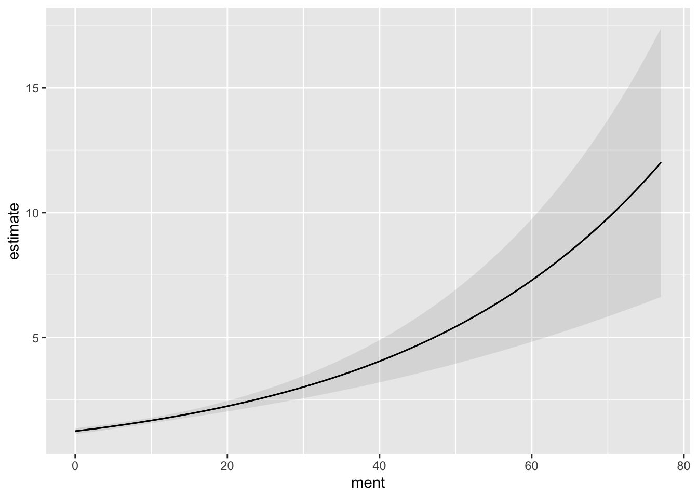
7.3.1 Mixed Effects Model
Consider the Owls data set in the glmmTMB package. The ChatGTP summary of the accompanying article is: Baby barn owls use loud calls to ask their parents for food, and these calls can show how hungry they are. The study found that chicks beg more loudly when their mother is present than when their father is there, even though they are just as hungry in both cases. Researchers think this happens because mothers and fathers act differently when feeding, so chicks adjust their behavior to get more food. This shows that young birds can tell their parents apart and change how they ask for food to improve their chances of being fed.
## # A tibble: 599 × 8
## nest food_treatment sex_parent arrival_time sibling_negotiation brood_size
## <fct> <fct> <fct> <dbl> <int> <int>
## 1 Autava… Deprived Male 22.2 4 5
## 2 Autava… Satiated Male 22.4 0 5
## 3 Autava… Deprived Male 22.5 2 5
## 4 Autava… Deprived Male 22.6 2 5
## 5 Autava… Deprived Male 22.6 2 5
## 6 Autava… Deprived Male 22.6 2 5
## 7 Autava… Deprived Male 22.8 18 5
## 8 Autava… Satiated Female 22.9 4 5
## 9 Autava… Deprived Male 23.0 18 5
## 10 Autava… Satiated Female 23.1 0 5
## # ℹ 589 more rows
## # ℹ 2 more variables: neg_per_chick <dbl>, log_brood_size <dbl>We start by modeling sibling_negotiation by the other variables.
mod1 <- glmmTMB::glmmTMB(sibling_negotiation ~ sex_parent + arrival_time + brood_size + food_treatment + (1|nest), data = oo, family = poisson)
summary(mod1)## Family: poisson ( log )
## Formula:
## sibling_negotiation ~ sex_parent + arrival_time + brood_size +
## food_treatment + (1 | nest)
## Data: oo
##
## AIC BIC logLik -2*log(L) df.resid
## 5006.3 5032.6 -2497.1 4994.3 593
##
## Random effects:
##
## Conditional model:
## Groups Name Variance Std.Dev.
## nest (Intercept) 0.1663 0.4077
## Number of obs: 599, groups: nest, 27
##
## Conditional model:
## Estimate Std. Error z value Pr(>|z|)
## (Intercept) 4.414729 0.360109 12.259 < 2e-16 ***
## sex_parentMale 0.041245 0.036157 1.141 0.25398
## arrival_time -0.129546 0.009273 -13.969 < 2e-16 ***
## brood_size 0.178362 0.064668 2.758 0.00581 **
## food_treatmentSatiated -0.586289 0.036050 -16.263 < 2e-16 ***
## ---
## Signif. codes: 0 '***' 0.001 '**' 0.01 '*' 0.05 '.' 0.1 ' ' 1## # Overdispersion test
##
## dispersion ratio = 5.437
## Pearson's Chi-Squared = 3224.403
## p-value = < 0.001## Overdispersion detected.We see that the model has significant overdispersion, so we switch to negative binomial.
mod2 <- glmmTMB::glmmTMB(sibling_negotiation ~ sex_parent + arrival_time + brood_size + food_treatment + (1|nest), data = oo, family = nbinom2)
summary(mod2)## Family: nbinom2 ( log )
## Formula:
## sibling_negotiation ~ sex_parent + arrival_time + brood_size +
## food_treatment + (1 | nest)
## Data: oo
##
## AIC BIC logLik -2*log(L) df.resid
## 3474.7 3505.5 -1730.4 3460.7 592
##
## Random effects:
##
## Conditional model:
## Groups Name Variance Std.Dev.
## nest (Intercept) 0.09708 0.3116
## Number of obs: 599, groups: nest, 27
##
## Dispersion parameter for nbinom2 family (): 0.886
##
## Conditional model:
## Estimate Std. Error z value Pr(>|z|)
## (Intercept) 4.05642 0.68687 5.906 3.51e-09 ***
## sex_parentMale 0.08262 0.10530 0.785 0.43266
## arrival_time -0.11595 0.02506 -4.627 3.71e-06 ***
## brood_size 0.19354 0.06549 2.955 0.00312 **
## food_treatmentSatiated -0.65856 0.10805 -6.095 1.09e-09 ***
## ---
## Signif. codes: 0 '***' 0.001 '**' 0.01 '*' 0.05 '.' 0.1 ' ' 1## # Overdispersion test
##
## dispersion ratio = 0.455
## p-value = < 0.001## Underdispersion detected.## # Check for zero-inflation
##
## Observed zeros: 156
## Predicted zeros: 105
## Ratio: 0.67## Model is underfitting zeros (probable zero-inflation) (p < .001).This indicates that the model is not yet correctly specified. Let’s fix the zero inflation and see whether that also helps the underdispersion.
mod3 <- glmmTMB::glmmTMB(sibling_negotiation ~ sex_parent + arrival_time + brood_size + food_treatment + (1|nest),
ziformula = ~1,
data = oo,
family = nbinom2)
summary(mod3)## Family: nbinom2 ( log )
## Formula:
## sibling_negotiation ~ sex_parent + arrival_time + brood_size +
## food_treatment + (1 | nest)
## Zero inflation: ~1
## Data: oo
##
## AIC BIC logLik -2*log(L) df.resid
## 3403.6 3438.8 -1693.8 3387.6 591
##
## Random effects:
##
## Conditional model:
## Groups Name Variance Std.Dev.
## nest (Intercept) 0.0231 0.152
## Number of obs: 599, groups: nest, 27
##
## Dispersion parameter for nbinom2 family (): 2.44
##
## Conditional model:
## Estimate Std. Error z value Pr(>|z|)
## (Intercept) 3.86384 0.50342 7.675 1.65e-14 ***
## sex_parentMale 0.01946 0.07763 0.251 0.80209
## arrival_time -0.08529 0.01898 -4.494 7.00e-06 ***
## brood_size 0.09815 0.04198 2.338 0.01937 *
## food_treatmentSatiated -0.25209 0.08396 -3.003 0.00268 **
## ---
## Signif. codes: 0 '***' 0.001 '**' 0.01 '*' 0.05 '.' 0.1 ' ' 1
##
## Zero-inflation model:
## Estimate Std. Error z value Pr(>|z|)
## (Intercept) -1.2156 0.1133 -10.73 <2e-16 ***
## ---
## Signif. codes: 0 '***' 0.001 '**' 0.01 '*' 0.05 '.' 0.1 ' ' 1## # Overdispersion test
##
## dispersion ratio = 0.882
## p-value = 0.32## No overdispersion detected.## # Check for zero-inflation
##
## Observed zeros: 156
## Predicted zeros: 151
## Ratio: 0.96## Model seems ok, ratio of observed and predicted zeros is within the
## tolerance range (p = 0.600).Note that fixing the zero inflation also fixed the dispersion issues. So, this looks like it is pretty good. We note that there is no sex of parent effect on the number of calls. That is because sibling negotiation measures the number of calls that the siblings make before the parent arrives. We can also test to see whether there is an interaction between food treatment and sex of the parent that arrives.
mod4 <- glmmTMB::glmmTMB(sibling_negotiation ~ sex_parent * food_treatment + arrival_time + brood_size + (1|nest),
ziformula = ~1,
data = oo,
family = nbinom2)
summary(mod4)## Family: nbinom2 ( log )
## Formula:
## sibling_negotiation ~ sex_parent * food_treatment + arrival_time +
## brood_size + (1 | nest)
## Zero inflation: ~1
## Data: oo
##
## AIC BIC logLik -2*log(L) df.resid
## 3405.2 3444.8 -1693.6 3387.2 590
##
## Random effects:
##
## Conditional model:
## Groups Name Variance Std.Dev.
## nest (Intercept) 0.02469 0.1571
## Number of obs: 599, groups: nest, 27
##
## Dispersion parameter for nbinom2 family (): 2.44
##
## Conditional model:
## Estimate Std. Error z value Pr(>|z|)
## (Intercept) 3.88055 0.50518 7.682 1.57e-14 ***
## sex_parentMale -0.02115 0.09994 -0.212 0.8324
## food_treatmentSatiated -0.31953 0.13382 -2.388 0.0169 *
## arrival_time -0.08563 0.01900 -4.506 6.62e-06 ***
## brood_size 0.10205 0.04294 2.376 0.0175 *
## sex_parentMale:food_treatmentSatiated 0.10281 0.15827 0.650 0.5160
## ---
## Signif. codes: 0 '***' 0.001 '**' 0.01 '*' 0.05 '.' 0.1 ' ' 1
##
## Zero-inflation model:
## Estimate Std. Error z value Pr(>|z|)
## (Intercept) -1.220 0.114 -10.69 <2e-16 ***
## ---
## Signif. codes: 0 '***' 0.001 '**' 0.01 '*' 0.05 '.' 0.1 ' ' 1There is not a significant interaction. Question: what would an interaction have meant in terms of the owls? What would have been a plausible explanation for an interaction, depending on the exact nature of the study?
7.4 Offsets
There is one additional applied regression tool that we have not yet talked about - offsets. An offset is used when the response variable is a count, but the counts are not all measured over the same amount of time. For example, if we are modeling the number of doctor visits in a year, but some people are only observed for 6 months, then we would want to use an offset to account for the fact that some people are observed for a shorter amount of time. The offset is typically the log of the amount of time that each observation is observed for. This allows us to model the rate of doctor visits per unit of time, rather than the total number of doctor visits. Mathematically, we suppose that the expected count is given by
\[
E[\mathrm{count}_i] = \lambda_i t_i
\]
where \(\lambda_i\) is the rate at which the counts appear and \(t_i\) is the length of time observed. Then we can model the log of the expected value as
\[
\log E[\mathrm{count}_i] = \log \lambda_i + \log t_i = \beta_0 + \beta_1 x_{1i} + \log t_i
\]
where we are using the familiar \(\log \lambda_i = \beta_0 + \beta_1 x_{1i}\) formulation when we have exactly one predictor. The theory specifies that the coefficient associated with \(\log t_i\) will be exactly 1, even if a different coefficient has a higher likelihood or a lower loss function. In order to specify that the coefficient is exactly 1, we use the offset function.
In our previous analysis of Owls, we modeled sibling negotiation on the other variables. Reading the paper, I believe that sibling negotiation is the total number of negotiations - not the number per chick. That means that we probably want to have an offset, which is the brood size. Let’s run this model to see what we get. Remember, doing this means that we believe that the number of negotiations is proportional to the number of chicks. There are no synergies (where multiple chicks produce more negotiations than the sum of the chicks) or competitions (where multiple chicks produce fewer negotiations). Let’s see how this model works.
mod5 <- glmmTMB(
sibling_negotiation ~ sex_parent + arrival_time + food_treatment +
offset(log(brood_size)) + (1 | nest),
zif = ~ 1,
family = nbinom2,
data = oo
)
performance::check_zeroinflation(mod5)## # Check for zero-inflation
##
## Observed zeros: 156
## Predicted zeros: 150
## Ratio: 0.96## Model seems ok, ratio of observed and predicted zeros is within the
## tolerance range (p = 0.496).## Family: nbinom2 ( log )
## Formula:
## sibling_negotiation ~ sex_parent + arrival_time + food_treatment +
## offset(log(brood_size)) + (1 | nest)
## Zero inflation: ~1
## Data: oo
##
## AIC BIC logLik -2*log(L) df.resid
## 3415.3 3446.1 -1700.7 3401.3 592
##
## Random effects:
##
## Conditional model:
## Groups Name Variance Std.Dev.
## nest (Intercept) 0.06127 0.2475
## Number of obs: 599, groups: nest, 27
##
## Dispersion parameter for nbinom2 family (): 2.31
##
## Conditional model:
## Estimate Std. Error z value Pr(>|z|)
## (Intercept) 2.81742 0.49031 5.746 9.13e-09 ***
## sex_parentMale -0.01236 0.08081 -0.153 0.878460
## arrival_time -0.08214 0.01979 -4.150 3.32e-05 ***
## food_treatmentSatiated -0.30496 0.08718 -3.498 0.000469 ***
## ---
## Signif. codes: 0 '***' 0.001 '**' 0.01 '*' 0.05 '.' 0.1 ' ' 1
##
## Zero-inflation model:
## Estimate Std. Error z value Pr(>|z|)
## (Intercept) -1.2719 0.1213 -10.48 <2e-16 ***
## ---
## Signif. codes: 0 '***' 0.001 '**' 0.01 '*' 0.05 '.' 0.1 ' ' 1Note that there is no estimate associated with log(brood_size), because its coefficient is assumed to be one by the model. One way to test this (biological) assumption is to run the model with the log of brood size as a predictor, and see whether the coefficient is close to 1.
mod_test <- glmmTMB(
sibling_negotiation ~ sex_parent + arrival_time + food_treatment +
log(brood_size) + (1 | nest),
zif = ~1,
family = nbinom2,
data = oo
)
summary(mod_test)## Family: nbinom2 ( log )
## Formula:
## sibling_negotiation ~ sex_parent + arrival_time + food_treatment +
## log(brood_size) + (1 | nest)
## Zero inflation: ~1
## Data: oo
##
## AIC BIC logLik -2*log(L) df.resid
## 3403.4 3438.6 -1693.7 3387.4 591
##
## Random effects:
##
## Conditional model:
## Groups Name Variance Std.Dev.
## nest (Intercept) 0.02301 0.1517
## Number of obs: 599, groups: nest, 27
##
## Dispersion parameter for nbinom2 family (): 2.45
##
## Conditional model:
## Estimate Std. Error z value Pr(>|z|)
## (Intercept) 3.75311 0.51776 7.249 4.21e-13 ***
## sex_parentMale 0.01727 0.07735 0.223 0.8233
## arrival_time -0.08498 0.01895 -4.484 7.31e-06 ***
## food_treatmentSatiated -0.24845 0.08371 -2.968 0.0030 **
## log(brood_size) 0.37176 0.15528 2.394 0.0167 *
## ---
## Signif. codes: 0 '***' 0.001 '**' 0.01 '*' 0.05 '.' 0.1 ' ' 1
##
## Zero-inflation model:
## Estimate Std. Error z value Pr(>|z|)
## (Intercept) -1.214 0.113 -10.75 <2e-16 ***
## ---
## Signif. codes: 0 '***' 0.001 '**' 0.01 '*' 0.05 '.' 0.1 ' ' 1No, it is quite far from 1. This indicates that per-chick calling declines with larger broods.